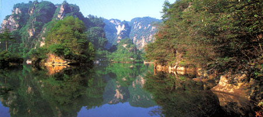

| [宝峰湖]：宝峰湖是自然与人共同创作完成的风景艺术绝作。上世纪七十年代，当地村民筑坝发电，无意间造就了—个风景秀丽的湖泊，因湖背依宝峰山，故此得名。八十年代中期，宝峰湖作为自然公园推向旅游市场；九十年代，该公园由马来西亚保利实业发展有限公司租赁经营，开创了张家界市旅游资源商业化管理模式的先例。公园由宝峰湖和鹰窝寨两大块组成，包括动态水景区、水上游乐区、民俗风情园、动物神趣区、保利度假村、保利娱乐中心和奇异登山线等七大项目。尤以宝峰湖、宝峰飞瀑、鹰窝寨、一线天四大景观最为叫绝，被称为武陵源“四绝”。
|
|